| Знание законов сложения, образования обратного вектора и умножения векторов на скаляр позволяет нам описывать положения отдельных точек и прямых в пространстве, определять средние точки и относительные положения прямых, а также рассматривать их пересечения.
Для того чтобы определить угол, образованный прямыми, установить кратчайшее расстояние между скрещивающими прямыми, получить уравнение плоскости и найти проекцию точки на заданную плоскость, мы должны знать векторные эквиваленты триго-нометрических соотношений.
Скалярное произведение
Любой вектор можно однозначным образом разложить на два взаимно перпендикулярных вектора, если задано направление одного из них:
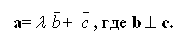
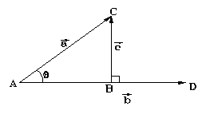
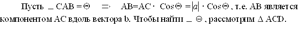
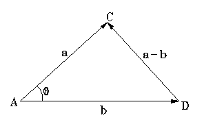
Имеет место соотношение
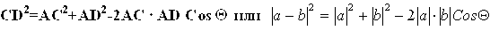
Выражая модули через декартовы компоненты, получаем уравнение
После преобразований
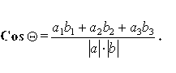
Компонента вектора a вдоль b (или проекция a на b ) определяется:
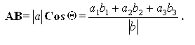
Скалярная величина a1b1+...+ a3b3 называется скалярным произведением векторов и обозначается через а * b:
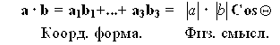
Имеют место следующие соотношения:
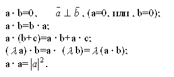
Пример:
Если a и b - направленные векторы двух прямых, то угол образованный этими пря-мыми определяется по формуле:
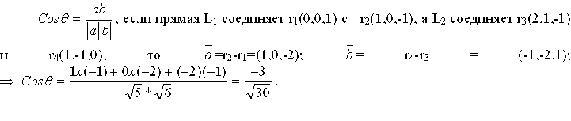
Векторное уравнение плоскости
Вектор r, задающий положение точки Р(r), лежащей в плоскости П которая проходит через заданную точку Р0(r0) перпендикулярно u , можно определить исходя из того, что r-r0 лежит в плоскости П и, следовательно, перпендикулярна u -> (r-r0)u=PPocosП/2=0
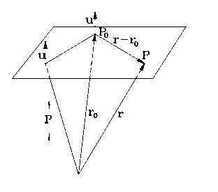
В итоге уравнение плоскости имеет вид
ru=r0u=p,
где р - расстояние от начала координат до плоскости П.
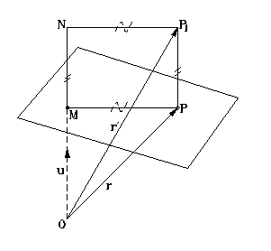
Точка P (r) является ортогональной проекцией точки Р1(r1) на плоскость ru=p и оп-ределяется соотношением r1-r=NMu -> r=r1-(ON-OM)u=r1+(ru-r1u) u-> r=r1+(p-r1u)u. Этот результат используется при определении параллельной проекции трехмерных объектов.
Вектор, перпендикулярный двум заданным векторам a и b .Векторное произведение
Часто требуется определить вектор перпендикулярный двум заданным.
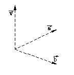
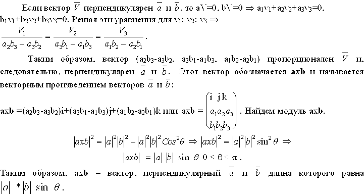
Имеют место следующие соотношения:
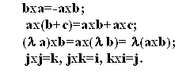
|